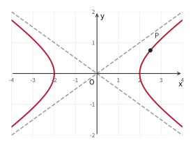
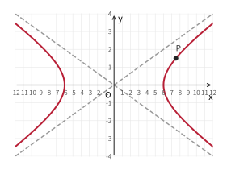
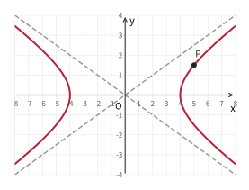

別冊練習問題 8 の解答 双曲線の接線と漸近線で囲む三角形の面積
(1) 双曲線 \(\dfrac{x^2}{4}-\dfrac{y^2}{1}=1\) 上の点 \(P\left(\dfrac{5}{2},\ \dfrac{3}{4}\right)\) における接線と、2本の漸近線とで囲まれる三角形（原点 \(O\) を頂点にもつ）の面積を求めよ。
接線と漸近線
\(P(\dfrac{5}{2},\ \dfrac{3}{4})\) での接線：
\[\dfrac{\dfrac{5}{2}\,x}{4}-\dfrac{\dfrac{3}{4}\,y}{1}=1\]漸近線 \(y=\pm\dfrac{1}{2}x\)。

交点
接線と2本の漸近線の交点 \(A,B\)。双曲線の性質として、三角形 OAB の面積は点 P によらず一定で \(ab\)。
面積
\[ab=2\times1=2\]【答案】
\[2\]答
(2) 双曲線 \(\dfrac{x^2}{36}-\dfrac{y^2}{4}=1\) 上の点 \(P\left(\dfrac{15}{2},\ \dfrac{3}{2}\right)\) における接線と、2本の漸近線とで囲まれる三角形（原点 \(O\) を頂点にもつ）の面積を求めよ。
接線と漸近線
\(P(\dfrac{15}{2},\ \dfrac{3}{2})\) での接線：
\[\dfrac{\dfrac{15}{2}\,x}{36}-\dfrac{\dfrac{3}{2}\,y}{4}=1\]漸近線 \(y=\pm\dfrac{2}{6}x\)。

交点
接線と2本の漸近線の交点 \(A,B\)。双曲線の性質として、三角形 OAB の面積は点 P によらず一定で \(ab\)。
面積
\[ab=6\times2=12\]【答案】
\[12\]答
(3) 双曲線 \(\dfrac{x^2}{16}-\dfrac{y^2}{4}=1\) 上の点 \(P\left(5,\ \dfrac{3}{2}\right)\) における接線と、2本の漸近線とで囲まれる三角形（原点 \(O\) を頂点にもつ）の面積を求めよ。
接線と漸近線
\(P(5,\ \dfrac{3}{2})\) での接線：
\[\dfrac{5\,x}{16}-\dfrac{\dfrac{3}{2}\,y}{4}=1\]漸近線 \(y=\pm\dfrac{2}{4}x\)。

交点
接線と2本の漸近線の交点 \(A,B\)。双曲線の性質として、三角形 OAB の面積は点 P によらず一定で \(ab\)。
面積
\[ab=4\times2=8\]【答案】
\[8\]答